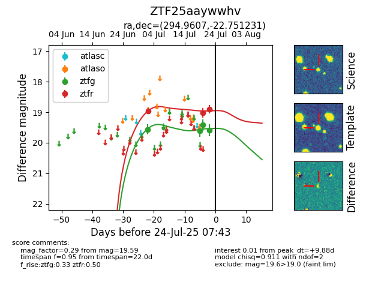

Target ZTF25aaywwhv at 2025-07-24 07:43, see:
FINK: fink-portal.org/ZTF25aaywwhv
Lasair: lasair-ztf.lsst.ac.uk/objects/ZTF25aaywwhv
ALeRCE: alerce.online/object/ZTF25aaywwhv
alt names
ZTF25aaywwhv (ztf,fink)
coordinates:
equatorial (ra, dec) = (294.9607,-22.75123)
galactic (l, b) = (17.0804,-20.38966)
photometry
last ztfg=19.59, ztfr=18.91
4 ztfg, 3 ztfr detections
